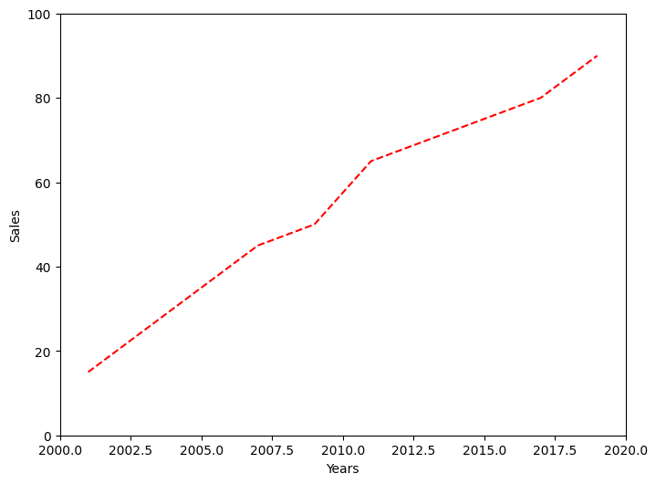

🎯 Task
Create a line plot using the data provided below. This plot should have the following characteristics:
- Set the figure size to 8x6 inches.
- Customize the plot by setting the line color to red and the style to dashed.
- Label the x-axis as "Years" and the y-axis as "Sales".
- Set x-axis limits to (2000, 2020) and y-axis limits to (0, 100).
- Save the plot as a PNG file named sales_plot.png with a resolution of 300 dpi.
Data you should include are:
-
x (years): [2001, 2003, 2005, 2007, 2009, 2011, 2013, 2015, 2017, 2019]
-
y (sales): [15, 25, 35, 45, 50, 65, 70, 75, 80, 90]

🔒 Restrictions
- Use only pandas and matplotlib
- Use Object-Oriented plotting
- Use the mentioned color and line style
- Follow the exact naming (
x, y, Years, Sales, sales_plot.png).